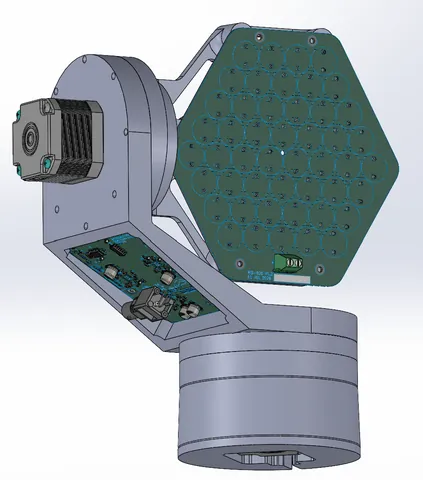
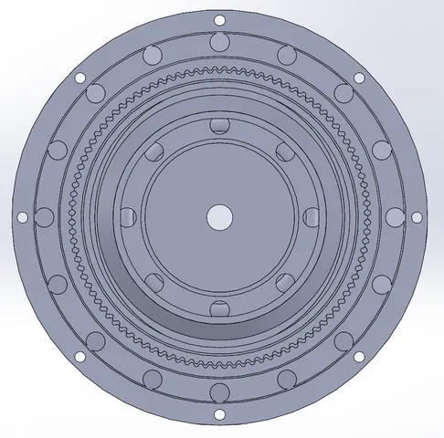
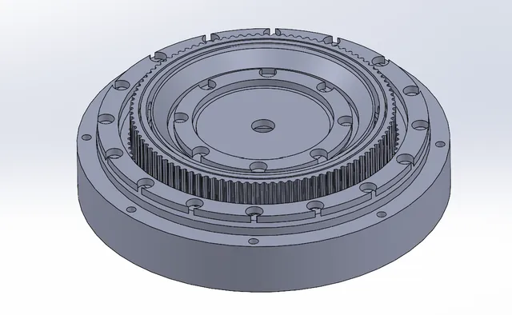
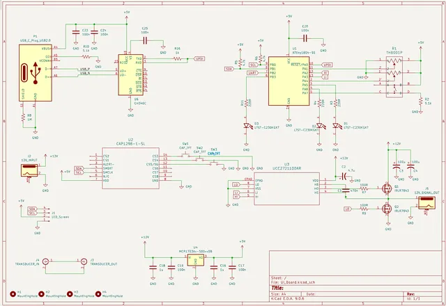
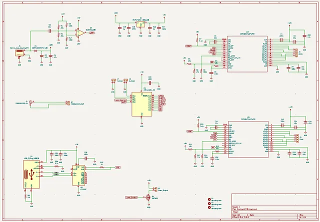
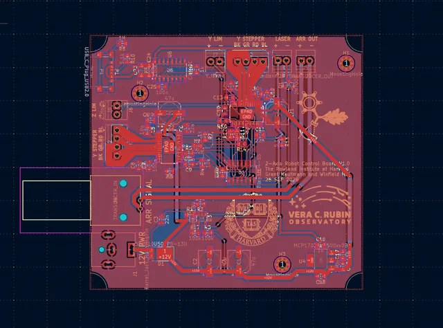
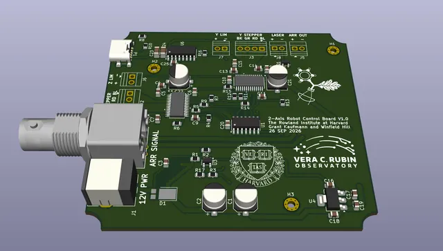

Turning a measurement requirement into a robotics problem
The basic measurement only requires the transducer array to be aimed over a small angular range, and a geared servo linkage could have met that need. I chose to use the project as an opportunity to build a more general two-degree-of-freedom actuator that can be positioned remotely through a full rotation.
The target pointing accuracy is 0.1 degree. That is a design requirement agreed on with the researchers, not a measured accuracy result yet. Multiple retroreflectors around the telescope are a possible extension for sampling several paths through the air, but that is a nice-to-have rather than a requirement.


Designing a printable 50:1 strain-wave drive
Each axis uses a NEMA 17 stepper motor and a custom 50:1 strain-wave gearbox. With a 200-step-per-revolution motor, one full motor step corresponds to a theoretical output increment of about 0.036 degree before accounting for backlash, compliance, print error, and microstepping behavior.
I chose a printed strain-wave drive because commercial metal units are expensive and difficult to manufacture from scratch, and because the geometry was a useful design challenge. The flex spline has 98 teeth against a 100-tooth fixed spline. Instead of coupling the output directly through a long cup-shaped flex spline, I separated the output and used a second 98-tooth interface. The goal is to keep deformation localized and reduce the layer-line stresses that concern me in a printed cup.




Integrating the bearings instead of packaging catalog parts
The gearbox uses printed bearing races with loose steel bearing balls rather than conventional packaged bearings in several locations. Ball arrays around the elliptical wave generator let the flex spline move smoothly while keeping the assembly compact.
I also used thrust-bearing arrangements to react axial loading and the overturning moment from the transducer assembly. One external bearing helps hold the assembly together in tension while internal bearings resist compression. I may move toward tapered or deep-groove bearings in a later version as I learn more from the load path and prototype behavior.
FDM first, then resin - and a new DFM problem
I deliberately made the first gearbox in FDM because it was fast and inexpensive. It proved the basic geometry, but friction and tolerance variation were high, especially around the small tooth profiles. I then adjusted the clearances and moved the design to tough resin.
The resin version improved feature definition but introduced a different problem: parts warped because the geometry had originally been designed around FDM. I am now redesigning those parts for resin manufacturing rather than treating the new process as a drop-in replacement. The video above shows the resin-printed gearbox prototype.
Two boards, two axes, and one cable carrying power and commands
The actuator uses two NEMA 17 motors and custom electronics. The actuator board schematic uses an ATtiny1604 microcontroller and two DRV8434A stepper drivers. A separate hand-control board uses another ATtiny1604, a CAP1298 capacitive-touch controller, a joystick, an LCD connection, USB through a CH340C, and a UCC27211 half-bridge gate driver with IRLR7843 MOSFETs to switch the 12 V line.
A packaging constraint from the lab was to use a long DC twisted pair for both power and commands. My approach is to encode a one-wire UART signal by switching the 12 V supply. At the actuator, a diode and reservoir capacitance maintain DC power while a high-pass path and comparator recover the data transitions. I selected a relatively high signaling rate so the energy-storage capacitor can remain practical. The exact data rate is still being finalized in firmware; the narration included conflicting 100 kHz / 100 bit-per-second wording, so I am not publishing an unverified baud-rate number.




Open-loop positioning, with a laser for setup and validation
I chose not to add absolute encoders at this stage. The load is light, the stepper reduction gives substantial holding torque, and the array can be manually referenced at setup. From that known position, the controller can track relative motion as long as the motors do not miss steps. A laser mounted with the array provides a practical aiming reference.
To validate the 0.1-degree requirement, I plan to rigidly mount the actuator and use a long-baseline laser test. I will command individual steps, measure the laser-spot displacement on a distant target, convert that displacement to angle, and repeat the test in both directions. Direction reversals will let me quantify backlash and hysteresis rather than treating theoretical step size as achieved accuracy.
Where the project is now
The mechanical concept has progressed through FDM and resin gearbox prototypes, and the complete two-axis assembly, control board, and actuator board have been designed. As of this update, I am waiting for the two PCBs to be fabricated, revising the resin parts for manufacturability, and beginning firmware for the control system.
The hand controller is designed around a joystick, capacitive-touch inputs, and an LCD that will show commanded angular position and system status. The finished accuracy, reliability, and temperature-measurement performance remain to be demonstrated; those are the next tests, not claims about the current prototype.



